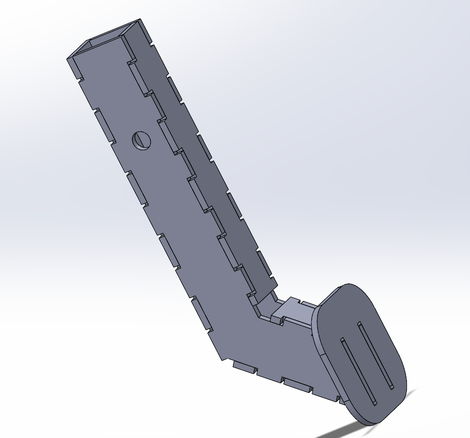
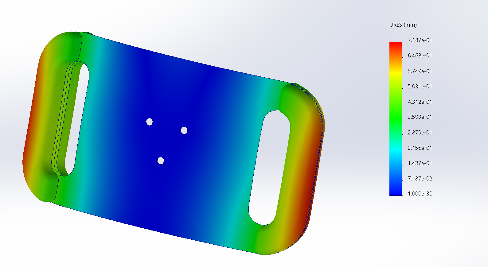
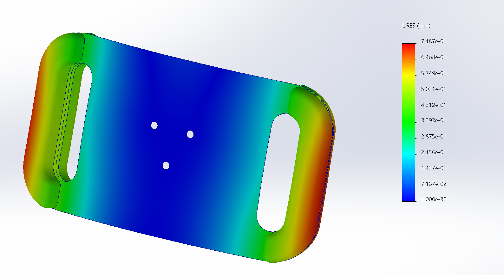

Featured Projects
First Pedal Design


Developed the initial pedal design focusing on ergonomic fit and durability under rugged off-road racing conditions.
Skills used: SolidWorks, Mechanical Design, Pedal Mechanics
Steering Column


Custom lightweight steering column optimized for strength, ergonomics, and cockpit integration.
Steering Column Bracket


Bracket engineered to secure the steering column with improved support and vibration reduction.
New Pedal Design


Redesigned the pedal system to improve responsiveness and comfort.
Switch Box


Compact switch box to manage 4WD controls and auxiliary systems.
Steering Yoke
 

Steering yoke designed for strength, minimal weight, and efficient manufacturing.